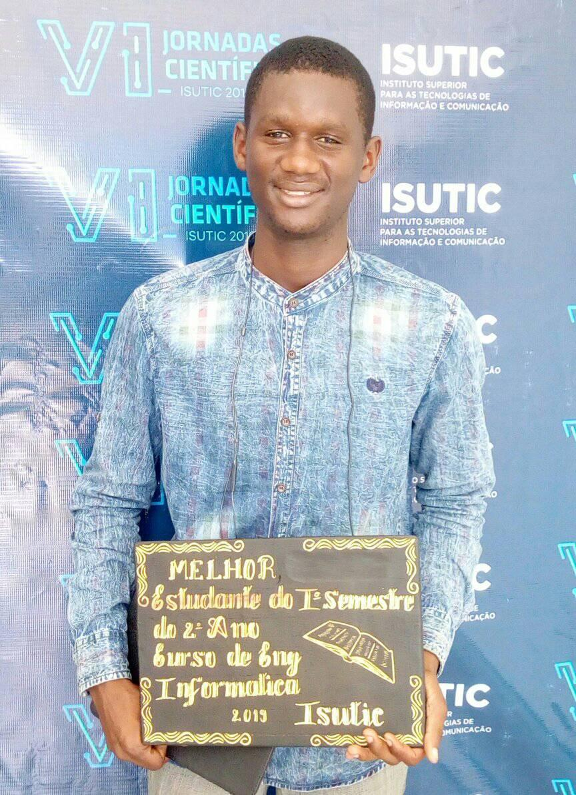

Ultimas Actividades


É um prazer me apresentar como um experiente programador com mais de 8 anos de experiência na area tecnologica, Ao longo dos anos, tive a honra de trabalhar em projetos desafiadores e inovadores, empregando minha profunda compreensão de varias linguagens de programação " C#, ASP.Net, Java, Web, PHP " e minha paixão pela criação de soluções robustas e eficientes.
Israel Emanuel Nascimento Morais, de nacionalidade angolana com 23 anos de Idade Enginheiro informático formado pela Universidade de Luanda Instituto INSTIC (Ex ISUTIC) especialista em programação, com varias formações no ramo tecnologico.
Formações na area de tecnologia como HCNA Routing and Switching, Implatação e gerenciamento de cameras de vigilancia CCTV, Comunicação por Satelites Instalação e Manutenção de Antenas VSAT, tecnologia de redes convergentes I.T criação de projcto electronico com o sistema Arduino.
Em 2018 o meu projecto Sistema Gestão Escolar com enfase no pagamento e e contro das propinas de cada estudante recebeu medalha de 2º luagr na V jornadas cintifica da universidade.
Em 2019 foi destado como melhor estudante do Iº trimestre do 2º ano do curso de Engenharia infomatica
no Instituto INSTIC (Ex ISUTIC).
No final de 2019 assinei um contrato como programador Júnior do projeto BISNO, que teve o seu fim
prematuro por conta da pandamia COVID-19.
Em 2021 assume a posição de Presidente da Associação dos Estudantes da instituição
ate o comprimento do meu primeiro e unico mandato que finalizaou em 2023.
Em 2023 assinei um contrato de trabalho com a Administração Municipal de Viana,
onde respondo como responsavel pelo Suporte tecnologico da Direcção Municipal da Agricultura,
Pecuaria e Pescas.